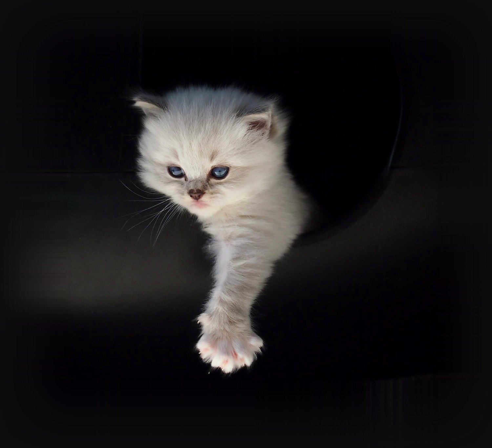

Aktualna dostępność kociąt
Mioty, kolory i terminy odbioru — przejrzyście w jednym miejscu.
Zobacz kocięta
Łagodny charakter, niebieskie oczy, staranna socjalizacja. Dorastają u nas w domu — wśród ludzi i dzieci.

Hodowla StElli
Jesteśmy małą rodzinną hodowlą kotów rasy Ragdoll. Nazwaliśmy ją od naszych dwóch małych współhodowczyń — Stelli i Elleny. Wszystkie nasze koty mieszkają z nami w całym domu, nie w klatkach, i od pierwszego dnia są częścią rodziny.
Naszym celem jest wychowanie w pełni socjalizowanych kociąt z naciskiem na zdrowie, wygląd i charakter.
Więcej o nasNasze mioty
Nie każ swojemu nowemu kocięciu czekać — zobacz nasze aktualne i minione mioty wraz z dostępnością.
Zobacz mioty


„Wierzę, że potrafimy wychować w pełni socjalizowane kocięta z naciskiem na zdrowie, wygląd i charakter.”
Petra Vávrová — założycielka hodowli StElli

Nasze zasady
Jesteśmy rodzinną hodowlą, której naprawdę zależy na tym, aby każde kocię od pierwszych chwil życia otrzymało maksymalną opiekę i miłość.
Zajrzyj do nas
Mioty, kolory i terminy odbioru — przejrzyście w jednym miejscu.
Zobacz kocięta
Badania genetyczne, opieka weterynaryjna i socjalizacja — trzy filary naszej hodowli.
Jak hodujemy
Zdjęcia z naszego codziennego życia z kotami i kociętami.
Do galerii